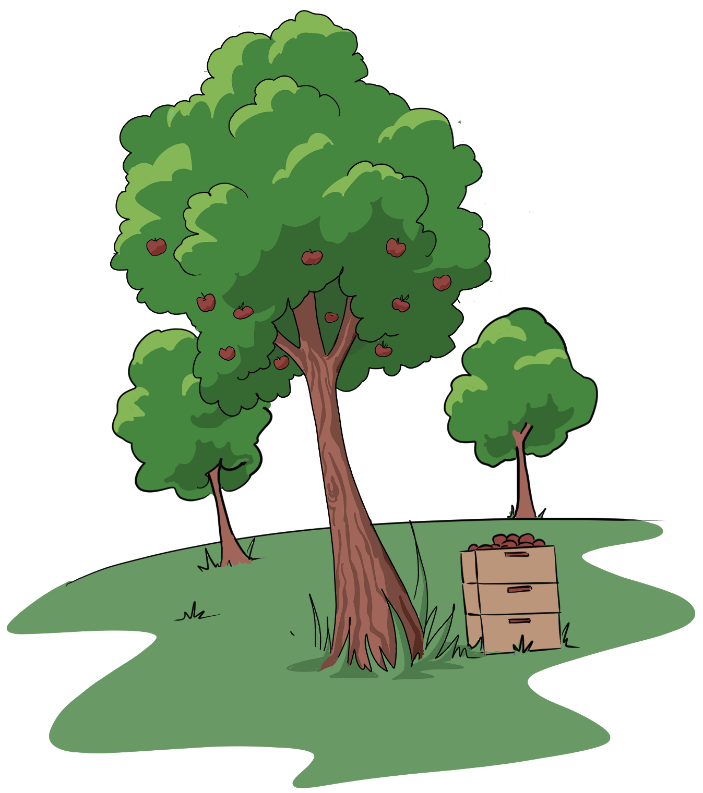
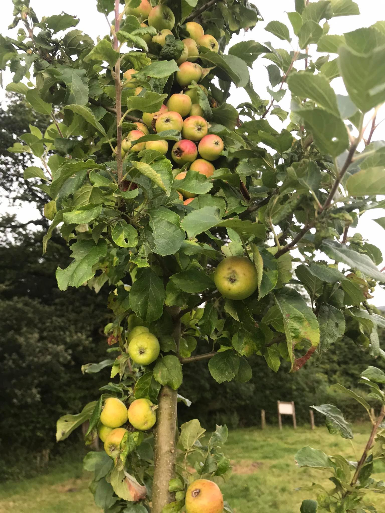
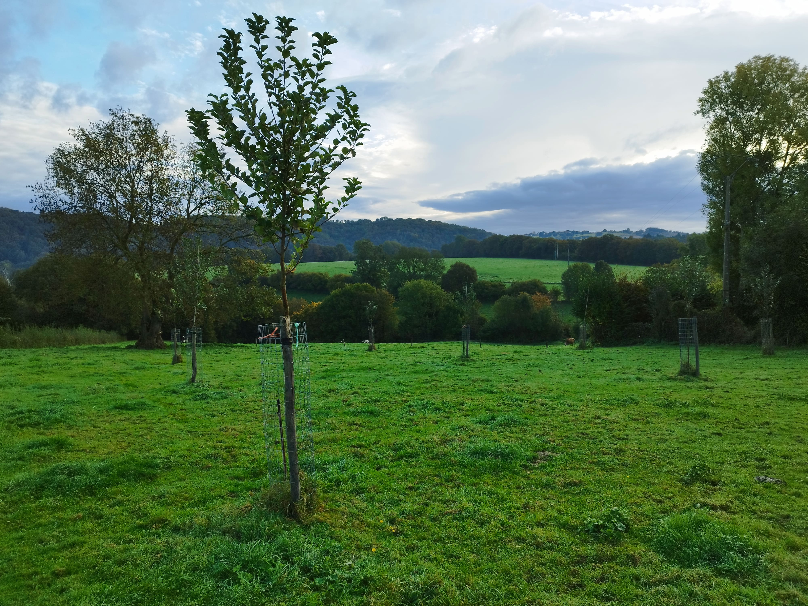
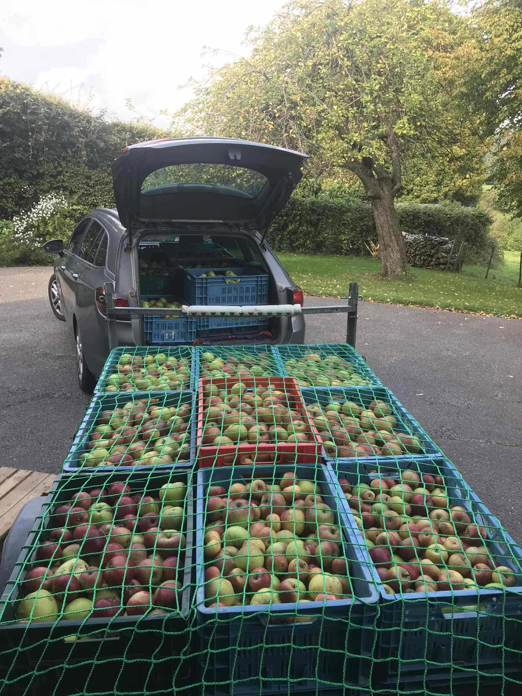

Un patrimoine préservé 🌳
Depuis 1950, près de 90% des vergers haute-tige ont disparu de nos paysages. Les vergers qui entouraient cette ferme n'ont pas échappé à cette tendance : seuls quelques arbres rescapés ont traversé les décennies.
En 2022, grâce à un financement participatif et un chantier collectif, nous avons replanté sur 1,5 hectare un verger de 70 arbres fruitiers haute-tige issus de variétés anciennes. Ces jeunes arbres sont venus rejoindre les derniers témoins des vergers d'autrefois.
Haute-tige et variétés anciennes 🍎
Un verger haute-tige est un ensemble d'arbres fruitiers, plantés dans une prairie, dont le tronc atteint au moins 1,80 m. Outre sa fonction de production, il joue un grand rôle patrimonial et environnemental.
Les fruitiers plantés ici sont issus de variétés anciennes et locales. Ils sont adaptés à notre terroir, tolèrent les sècheresses et résistent bien aux maladies. On retrouve sur cette ferme près de 40 variétés différentes de pommiers, cerisiers, pruniers et poiriers qui contribuent à la préservation du patrimoine fruitier régional.
Les multiples avantages du verger 🌿
Ces arbres offrent de nombreux bénéfices à l'écosystème de la ferme :
- Ils fournissent des fruits de variétés anciennes de haute qualité gustative et nutritionnelle.
- Ils créent des zones d'ombre et de protection pour les animaux et participent à la climatisation du bocage tout en permettant le pâturage du bétail.
- Ils servent de refuge à la faune sauvage et aux auxiliaires de culture.
- Ils résistent bien aux maladies et par conséquent, ne nécessitent pas l'utilisation de pesticides de synthèse.
- Ils embellissent le paysage et séquestrent le carbone par la photosynthèse.
- Ils font remonter par les racines profondes l'eau et les minéraux. Cela réduit la sensibilité à la sécheresse et enrichit l'horizon superficiel du sol par la restitution de matière organique via les feuilles mortes et les fruits non récoltés.
La récolte de demain 🧺
Le verger atteindra sa pleine production aux alentours de 2040. Plusieurs pistes sont envisagées pour valoriser les fruits : la production de jus de pomme, de cidre, de sirop de Liège, de compotes, ou tout simplement la vente de fruits de table pour la consommation directe.
Le saviez-vous ?
- 2600, c'est le nombre de variétés différentes de pommes cultivées en Europe au début du XXe siècle. Aujourd'hui, seule une douzaine de variétés se retrouvent dans les magasins !
- 80 ans, c'est la durée de vie des arbres haute-tiges quand ils sont correctement taillés et entretenus.
- 200 kg, c'est la quantité de fruits qu'un pommier haute-tige est capable de produire annuellement.



